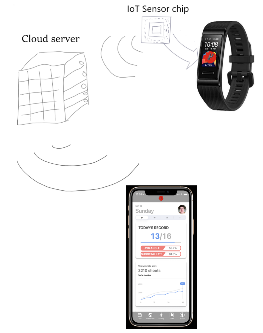
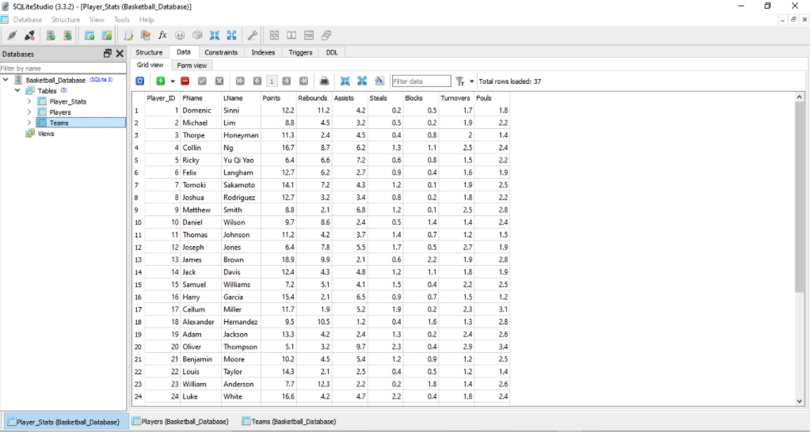

Detailed Description
Aims
HoopStats™’s overarching goal is the growth of basketball.
This comes in many forms, from improving interconnectivity, to increasing the popularity of the sport, and even improving the overall skill of basketball players.
With the creation of HoopStats™ , we intend to accomplish all these different parts of basketball's growth using different features.
First and foremost, the tracking aspect of the application is implemented to gather accurate data on the users.
This data is intended for both the purpose of allowing users to compare themselves to each other, and gauge their own skills,
but to also see what attributes of basketball they are least proficient at, so that they know how to train in order to improve their skills.
The tracking of the user’s blood rate and calorie burning is intended for the purpose of allowing the user to understand more about how they are affected by each game and by different training exercises.
The database linked to the applications aims to store data from all users together, to allow easier comparison of different users’ data.
The final major feature of HoopStats™ that has a particular aim is the media feature.
While the world is already full of social media platforms, we intend for our app to assist in linking basketball players, allowing for larger networks within the same sport.
The app also intends to encourage users to spend less time on different social media platforms, and instead to be active, and possibly seek to meet their online friends over a game of basketball.
Plans and Progress
Live performance tracking p.1 – IoT Wristband

One of the key factors of the design of this project is the implementation of live performance tracking of the user with their skills in basketball.
This would be split between two technologies; one would be the development of an Internet of Technology (IoT) smart device, that would differentiate between players on field and give feedback data to indicate areas of improvement.
The other technology that would be required to develop would be Artificial intelligence (AI) learning to have a camera differentiate between objects, calculate trajectory of the ball’s movement, and pose tracking of the user.
The IoT device is designed to have various functions that all culminate to aid in the completion of the key function of live performance tracking.
In particular, the device is to be desired to be designed in the way of a band or chip embedded inside a wristband to be within the accessory restrictions of the official NBA rulings.
The IoT device is designed to have three key functions; the first would be its original function as a IoT device, it would be a means of connection from itself to the connected smart device, this would be done via Wi-Fi or Bluetooth.
The second function would be as an identification tracker, an ID number will be generated upon the user’s creation of their account of HoopStats™.
This is intended to help pinpoint the user within the camera frame. Whilst also is intended for it to be able to differentiate between different IoT devices, given the situation of if two or more IoT devices are worn and in the cameras’ frame at the same time.
This function is intended for the use of multi-user training drills or to differentiate and pinpoint a player between the nine other players whilst in a match.
The third and final key function is for the IoT wrist band to be a health band, one which would receive data from its user and send it to the HoopStats™ database, this data could also be reviewed by the user on their own personal page in the HoopStats™ application.
This is intended to help the teams research into the user and to help indicate which areas that would be most beneficial to help the user to improve their gameplay. The type of data the wristband is intended to receive from the user, would be their stress levels, blood pressure, heart rate, the calories burnt etc.
Regrettably, the development of the technology of an IoT smart device is still only at the initial stage of research, the group underestimated the task of designing and developing a IoT smart device on our own.
Especially once the group started to research the development of the IoT device, we realised it needed more functions to fit the ideal design of the project.
With discussion between the group members, it was decided the key functions of the IoT device would be, for the device to have connection via a choice of wavelengths, Wi-Fi or Bluetooth, an ID number tracker and for it to have a means to differentiate it from another IoT band.
Lastly, for it to have the functions of a health band. Scheduling wise, the group is a bit behind schedule, it was predicted that the group could start development of the IoT device, at least the initial function’s part within the first four weeks of this assignment.
However, due to poor time management, personal reasons, and unexpected events the group's progress has been stunted. Given the situation, time and funding has become the hardest resources to manage to the success of this project.
The group’s goal is the design and development of an application which could be a social media hub for the targeted audience of fans of basketball, whilst also implementing technology that would aid in the growth of the performance of its users.
As the group has reached its final week of available time to be able to work on this project, the group is sadly halted from further progress into this project.
As such, the group has outlined a few key points of area of research and scheduling for a further ten weeks of research and development, namely noted in this document.
Given the additional time of ten weeks, the group believes it can complete the desired goal of completing the development of the HoopStats™ application and required technologies.
Live performance tracking p.2 – Artificial Intelligence Learning
One of the key factors of the design of this project is the implementation of live performance tracking of the user with their skills in basketball.
The most crucial technology that would be required to do this would be Artificial intelligence (AI) learning or Machine learning.
To have a camera differentiate between objects, calculate trajectory of the ball’s movement, and track the movement of the user via their pose movement.
The design and development of AI learning is the backbone of the live performance tracking idea.
The concept of being able to track and obtain data from a person literally just from viewing them though a camera, resulted in one of the key ideas of the project being to aid in the growth of basketball skill.
This also followed on of the initial core concepts of the project, being able to highlight specific achievements of a user whilst they play basketball.
Having the camera automatically track the user would allow an easier time to pinpoint possible high-level plays of the user.
The concept of live tracking a person’s performance in real time, and how this would be beneficial to improving it, is as follows.
Recording footage from a person’s gameplay can give very crucial information, it could show in the case of basketball, the angle of the shot and speed of which the ball is travelling.
With these two pieces of information, it is not too hard to calculate the trajectory of the ball’s travel.
Using trigonometry and calculations on the force applied to the ball from the given speed of the shot, it can be predicted whether an attempted shot would be successful or not.
This information could then be recorded and replayed to the user.
It could show what the user could have done to fix a failed attempt at the shot, be it applied more force or changing the angle of shot by altering their hand positions or their posture.
Whilst in the frame of a smart device camera within the HoopStats™ application installed onto it, the AI learning functions of the application are designed to track the users’ performance, analyse it, and provide feedback to the user.
With use from a smart device camera to film the user and having the machine learning framework be used for tracking the user and analysis of their performance.
The development of the function of Machine learning AI, is still somewhat past its initial stage.
The core concept has been completed, but the actual development has not properly begun. All the key functions of the live performance tracking would be done by the machine learning framework.
It would track the movement of the user, differentiate between the user and their surroundings, and do calculations for the trajectory of the ball’s movement.
It has been decided the group will use the machine learning framework of "ML kit "on Android and "Core ML" on iOS since our app is considering deploying services on both Android and iOS.
This allows object detection and tracking.
In the actual application, image analysis is performed by machine learning, and the trajectory of the shot is tracked, the number of shot times and successes, and the shot position on the court is updated in real-time.
To make these successful, do the following:
1) Lowering the recent years of high-performance camera frames and high resolution. Since it is a possibility that the smartphone will be overloaded with more data than necessary for tracking, reduce the amount of video data to be acquired.
2) Ask the user to align the hoop position and court to be in the camera's frame before playing to measure the exact position of the player's shot.
3) Track players, basketball, and goals, and exclude the others visual data.
Overall, the tracked data by the smart device will be analysed by A.I. and the results can be displayed to the player in real-time.

Future development stage, if the group were given more time, finalization of the development of this technology could be put into place. With it the core of the project would be finished and the completion of the key function of the application would be done.
Data storage
Efficient and effective data storage is one of the most pursued aspects of any business in today’s society, not just in the technology field.
Every business must be able to store their data in an efficient and secure way, so that it can not be accessed by anyone who wishes to access it, and so that it can be tracked to make important decisions in the future.
When it comes to data storage, the majority of businesses and other personnel would consider applying a database to store their data.
The main purpose of databases is to store information and data of multiple types, including text, images, media files, integers and more. Databases allow businesses to safely and securely store their data and information for the whole business,
while only giving access to those who are allowed to access the data. Some of the main advantages of databases include reduced data redundancy, increased consistency, an improvement to data integrity, and improved data security.
Another popular option when it comes to storing data is cloud storage. Cloud storage involves storing data and information onto the cloud, from which can be accessed at any time and location by authorised users.
Cloud storage is not recommended to be the main source of data storage for any business, but applying cloud storage has multiple advantages, such as ease of access, usability, cost efficiency, and multiple user capacity.
Due to our application’s reliance on personal information, both with the social media side and personal growth side, data and data storage are beyond important for our plan of action to function.
Currently we have planned that within the period of weeks 10 through week 12, we will have implemented and tested the SQL database that will be capable of storing all information that the application requires.
This database will store data on basketball teams, players and their statistics, and be capable of linking players to their appropriate teams, and statistics to the appropriate player.
It is planned that, within the three week timeframe, the database won’t be connected to the application.

In future stages of the application’s development, it is planned that the working database will be linked to the existing parts of the application.
This process will be done through the use of an API, or Application Programming interface. APIs are programs that act as a link or bridge between two different applications.
In this case, an API would be used to link the data that is displayed and recorded by the end user’s phone to the database, which would be stored in a server.
This setup will be optimal, as it means that the end user’s device needs less available storage, and allows all users to reference the data from the same copy of the database.
Social Media feed


Within our current age and society, individuals have formed a tight attachment towards various forms of media to inform themselves of events around the globe, with at least 3.7 billion individuals being connected as of 2019.
As the years have progressed, recreational media has taken highlight as they have appealed towards the larger, younger audience. By introducing a basketball centric social media platform for individuals will broaden the horizon for our demographic and the overall reach of our application.
Online currently, there exists many platforms of social media and forum platforms with the major competitors within the market being that of Facebook, Instagram, Twitter, and Reddit. The issue with the leading platforms includes the fact that relevant topics are various,
leading towards the influx of data from various outlets which often lead the user astray and disoriented.
It is cited that as of June 2018, 400 million active daily users spent an average of 53 minutes per day on the platform. Team Spurs believes that we can reduce screen time of users and encourage users to become more active in their day to day lives.
We desire to pursue this through the redesigned format of popular social media forums, maintaining only exclusively basketball related content and features signature to the application.
Differing from typical media, users will be able to use, manipulate and post their data collected from the application and post them online to share with their selected audiences.
Gathered data from the application can include that of basketball performance, e.g., career shots landed, time spent with the ball and/or rebounds made.
The interface for our desired social media application will be produced utilising figma prototype production, using wireframes to connect and present the appearance and desired functionality of our application.
Data storage will be ideally run on existing cloud computing servers, such that of ‘Google Cloud’ to store our services data.
This service is preferable in this project as it is available and accessible to major worldwide locations, allowing flexibility and ease of usage in a variety of locations.
In addition, the service can be edited utilising a coding language which is known by various team members, SQL.
As a result, the service's usage is flexible as members will be able to manipulate the system around our needs and desires.
Roles
Project Manager (Michael)
Michael takes charge as Project Manager due to his experience leading in previous group projects.
In his role, Michael is responsible for coordinating the efforts of the group, running group meetings, and considering the requirements of the application.
Michael’s role required that he stay in constant contact with all members to ensure that everyone was working towards the same intended outcome. He also assisted, like many members, with the process of writing all relevant information into the group document.
Michael was most in contact with Ricky and Collin, as their work acted as an extension of his, and Tomoki, due to how integral his work was to the final product.
Project Drafter (Ricky)
Ricky’s role of Project Drafter came about due to the amount of understanding that he showed in the initial concept, and his ability to apply the functions to real world situations.
Ricky’s role entailed that he come up with a plan of how the application would function for other members to base their work off of.
As an extension of this, he was in close contact with Michael, to know what the design needed to contain, and with Tomoki, to ensure that all that he had designed was present in the wireframes.
Ricky was also in close contact with Collin to ensure that their parts of the plan melded together well. Alongside his main role, Ricky also helped with programming the website, and contributing written content to the group document.
Lead Developer (Tomoki)
Tomoki’s in-depth knowledge of programming leads him to take the role of Lead Developer.
He was tasked with creating both a working wireframe for the application, using Figma as a baseplate, and a website for the research conducted, and group information to be stored.
Tomoki’s role required him to keep in contact with many other members of the group, to ensure that what he was creating matched what was intended.
These people who Tomoki was in contact with include; Michael for the requirements of the application and website, Ricky for assistance with the website and comparing what parts of his plan had been implemented, and Collin to ensure that the created application matched the concepts.
Tomoki also contacted Domenic rather frequently to ensure that the database and application matched each other appropriately.
Chief Editor (Thorpe)
Thorpe’s English skill led him to be a perfect fit as the Chief Editor. In his role, Thorpe took charge in reading over all writing within the project, including the application, website and group document.
This required thousands of words worth of reading, and many rewritten sections to ensure consistency and quality.
While he wasn’t editing the writing within the document, Thorpe was adding to it, ensuring that the document was as complete as he could.
Thorpe’s role required him to keep in contact with a few other members consistently, such as Michael and Ricky, who took charge in completing substantial writing alongside their main roles.
Thorpe also kept in contact with Felix and used his research as the basis as to how correct the information within the group document was.
Concept Designer (Collin)
Collin’s understanding of basketball, and the people involved in it allow him to make for the best Concept Designer.
His role requires that he plans out the aesthetic, and locations of particular functions, in the applications.
Collin is most qualified to do this as he comes from a basketball background, and as such knows what functions are optimal while together, and what styles appeal to the target audience best.
Because of his role, Collin was in close contact with Ricky, to ensure their separate parts of the design melded together well, and Tomoki, to ensure that his design was present in the wireframes.
Lead Researcher (Felix)
Felix took the role of Lead Researcher and spent most of the time looking into the technologies that would allow the concept to be further expanded.
Due to this, he spent quite some time looking into the Internet of Things, with a key focus on tracking.
Felix kept in touch with Thorpe the most, to ensure that the writing done between the two of them was well written and was factually accurate.
Felix also kept in contact with Michael and Ricky, as they both required the most research for each of their roles.
Database Administrator (Domenic)
Domenic’s knowledge of SQL and SQLite allowed him to take the forefront of the database aspect of the project as Database Administrator.
For this role, Domenic created and maintained a database for the storage and use of all basketball data that the application required.
This role was done rather separately compared to the other members of the group, although Domenic had reasons to keep in contact with some members of the group.
Domenic kept most connected with Tomoki, to ensure that there was consistency in the basketball data used between both the application and the database, and Michael to make sure that the data present was what was intended.
Scope and Limits
The scope of the project given the time frame of four weeks, are: the completion of the initial stage of research in each member’s grouped field of research, development of the three artifacts,
which would be, a figma which would have the framework design of the HoopStats™ application, an SQL database, to show the storage of a trial database of possible statistics of the users and learning how to link an API to our technology.
The limitations of the project are predominantly the restraints of time and funding.
The group believes completion of the actual application is not feasible given the time constraint, especially with the increased design of the project from the second assignment.
In addition to this, funding for the development of the technologies required for the project were not available.
Tools and Technologies
Figma wireframes (create mock GUI and application)
For the development of the application interface and prototyping, we utilised web-based online UI/UX designer Figma.
Figma is a strong web application capable of designing interfaces for mobile applications such as our own, and implementing/integrating functionality into elements.
Core features designed by this software include the HoopStats™ mobile application itself, in addition to its multitude of features including the interactive drills page, social media feed and its performance tracker.
Utilising features in figma, the team were able to create a working prototype of the desired mobile application with designed pages and operational interactive elements allowing users to actively switch between each of the pages on demand.
Figma helps us envision our ideal mobile application in both appearance and functionality wise if we were to actually create the program.
Database SQL (database)
To design and effectively integrate data into a database system, team Spurs utilised programming code SQL to manipulate and map table schemas and implement relevant data.
Creating and testing the code, the team utilised software program SQLite in process test trials for the code, to ensure the functionality of the code and identify potential limitations.
Player tracking/tracing algorithms
Through extensive research of current day player tracking/tracing capabilities, we have come across many existing programs and algorithms capable of doing so.
Some prime examples are that of machine learning algorithms, by learning and saving data on identifying features, such that items can be recognised later on.
Examples of this include Autostats which utilise a machine learning algorithm in order to track players movement within a live match via their jersey and the corresponding number.
Data collected from the cameras/sensors can be used to identify the movement and performance of an individual player.
IoT sensors (tracking specific inputs)
Taking inspiration from existing products such that of the HUAWEI Band 4e, certain sensors can reside within the form of an equippable accessory such as an armband,
wristwatch or an attachable item on your shoe.
Testing
Through the processing of the design for the project, relevant testing will be required to ensure quality for the product's final version. Relevant testing data can be utilised to identify weak elements in the system, in order to improve the applications.
This includes aspects such as interface and/or operation of the program.
[Computational testing]
Software/program majority of the time can be troublesome and tedious to create and troubleshoot this will require many instances of trial and error in order to achieve our desired outcome.
Essential testing within our systems includes the SQL DDL language code required in both creating and manipulating the data within a data server,
algorithms to transform the data into our desired format(averages and sums), code to program the IoT sensors and many other computational tasks.
Testing and troubleshooting of a system's internal processes is essential to ensure that everything operates smoothly, and to prevent potential errors in the future.
Stress testing can be performed to assess the program's outer boundaries to identify constraints in the program and debugging can be performed on code to ensure that it produces the intended results.
[User testing]
When conducting tests on the usability and likeability of our product, we require participants of our desired demographic to try and trial the application to ensure its feasibility within the live market.
Gathering participants, various methods can be used include online advertisements such as social media and/or flyers on posting boards.
For more of an incentive to persuade an individual to participate, they will be compensated for their time with a $10 shopping gift card.
Ideally, the team would like to isolate individuals into groups and select them based on their characteristics. E.g., the team would be able to target basketball enthusiasts and/or players with basketball knowledge.
However, due to limiting constraints, the most probable option would be convenience sampling, gaining as many participants despite their individual attributes.
User testing can be conducted on-site in a specified location, allowing for the experimental testing of the product during its developing/final stages under direct supervision and guidance from the researcher.
Within an on-site scenario, participants will be individually consulted on the use-case for the application, testing usability and accessibility of items and elements.
Additional methodology includes remote user-testing.
Such testing methods can be utilised in the event where participants are unable to arrive on site for a session, they will complete the application trial off-campus, and perhaps online via video call to conduct the research.
Timeframe
| Dates |
Week |
Description |
| 19/04-25/04 |
Week 7 |
Thorpe: Research IoT and how it can be implemented.
Domenic: Research Clouds, Servers and Servers
Ricky: Completing and finalising clouds, services and servers.
Editing/correcting my own personal portions.
Tomoki: Researching technology
|
| 26/04-02/05 |
Week 8 |
Thorpe: Edit assignment 2 group research.
Domenic: Finish off and polish written components
Ricky: Implement changes and final touches to the project ideas segment.
Aid in completion of data transfer to HTML with Tomoki
Tomoki: Editing HTML
|
| 03/05-09/05 |
Week 9 |
Coordinate what tasks are required, and delegate work
Domenic: Consider assignment tasks and allocate roles
Ricky: Research on ideal/desired features and elements for our project.
Tomoki: Researching A.I. and Tracking technology
|
| 10/05-16/05 |
Week 10 |
Discuss required artefacts for the assignment
Tomoki: Design apps wireframe on Figma
Tomoki: Researching A.I. and Tracking technology
Thorpe: Consider and allocate group roles.
Domenic: Complete personal sections for the assignment
Ricky: Completion of individual components, and project descriptions topic and landscape
|
| 17/05-23/05 |
Week 11 |
Tomoki: Design apps wireframe on Figma
Thorpe: Research possibilities with databases and APIs.
Domenic:Research databases, storage and how it can be implemented in the project idea
Ricky: Research on social media feed element for HoopStats™ application, assessing viability and possible appearances.
|
| 24/05-30/05 |
Week 12 |
Tomoki: Complete initial artefacts application
Complete initial documentation
Tomoki: Complete website for document
Thorpe: Proofread research from the group.
Domenic: Complete database and schema for the project idea
Ricky: Completion of incomplete segments of project description, risks, tools and technologies (for social media) and testing segment.
|
| 31/05-06/06 |
Week 13 |
Vid presentation
Review design, in preparation for future stage of development
|
| 07/06-13/06 |
Week 14 |
Future plans for project start from this date.
Week of Rest to boost group morale
|
| 14/06-20/06 |
Week 15 |
Approach possible investors
|
| 21/06-27/06 |
Week 16 |
Purchase necessary material for manufacturing of technology
Thorpe: Begin implementing API link.
Begin manufacturing of needed technology
|
| 28/06-04/07 |
Week 17 |
Grind of development
|
| 05/07-11/07 |
Week 18 |
Base code complete
Iot wristband complete development
|
| 12/07-18/07 |
Week 19 |
Testing of built technology
|
| 19/07-25/07 |
Week 20 |
Testing of code
|
| 26/07-01/08 |
Week 21 |
Testing of possible bugs or errors
|
| 02/08-08/08 |
Week 22 |
Testing of finalised product
|
| 09/08-15/08 |
Week 23 |
Complete final application
|
Risks
Projects and inventions are without doubt a difficult feat to create and achieve. This is due to the sheer amount of work and persistence required to maintain resilience throughout the painstaking design processes and tedious troubleshooting all in hopes to achieve an ideal outcome. In regards to HoopStats™, when designing and maintaining an application of this caliber, there arises the potential for numerous risks and scenarios which may prove detrimental to the project.
Potential risks are constraints and concerns which may hinder our ability to pursue and/or produce our desired outcome, such that the assignment may not be completed by the required deadline. Risks include lack of knowledge on code utilised, reliance on existing services and products and machine/computer errors.
The nature of database management requires knowledge of the fundamental languages utilised in order to manipulate and store data, in tabular formats, so code must be written in proper formats to ensure the operation of the program. Computing errors are a potential risk towards our project as we are all fairly new with SQL database formatting language, and as a result, the creation of a database may pose difficulties with code that may be failing to execute.
Without the database for our basketball application, the program will be unable to collect, store and manipulate the data making the core functionality of the application no longer viable. Additionally, we may be reliant on public domain and cloud servers meaning that our storage functionality will be at their mercy. In the event that the cloud service shuts down, our application will be unable to function anymore, leaving the application disconnected from the data for as long as the cloud service is.
Furthermore, damaged/dysfunctioning technology will also prove detrimental towards the completion of our method of performance tracking that is dependent on IoT sensors and AI learning algorithms. In the project, sensors we’ll be using/manipulating are cameras and wristbands/armbands. Given the following crisis, technologies ceased to function, our player and performance tracking capabilities will no longer be possible thus making the applications core functionality obsolete.
Group processes and communications
Our group ‘SPURS’ was successful in agreeing on an expected frequency of meetings and the use of multiple technologies in order to stay in frequent communication.
We agreed that a minimum of two formal meetings per week is required of each group member to attend which will be documented and recorded on Microsoft Teams.
Through the development process group members have been active in meetings with most members showing up consistently.
On top of these formal meetings, impromptu or planned meetings also take place on Discord 1-2 times per week in which group work is discussed further and anyone who is unclear on the current work to be done is brought up to speed.
Face-to-face meetings happen once per week during class on a Monday which are often missing a few group members; however our use of Discord and Microsoft Teams gives the feeling of constant and effective communication.
If group members are unresponsive they are pinged on the group Discord which is generally effective and if they are unable to attend a meeting a reason for absence is given. In the event that a group member is completely unresponsive,
meetings continue as planned and the work needing to be done is generally completed without a hitch.
With such a large group, when someone misses out on something, other group members are able to pick up the slack and inform the unresponsive group member of the situation and what needs to be done when they are ultimately contacted.